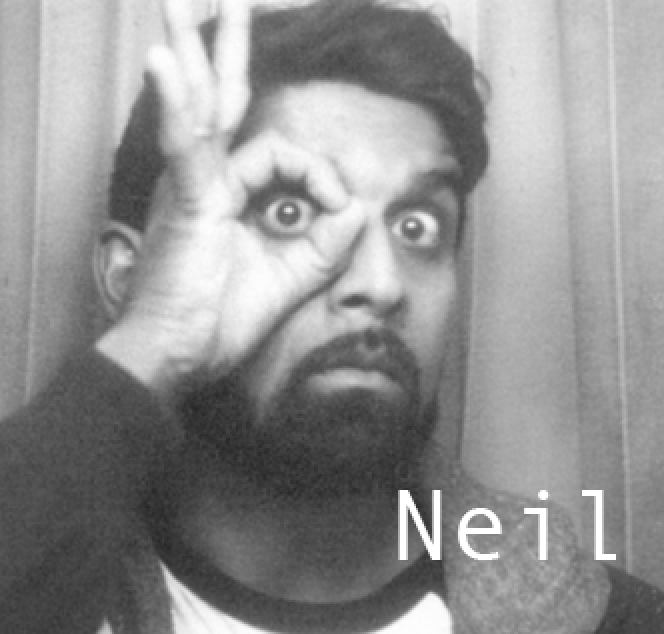
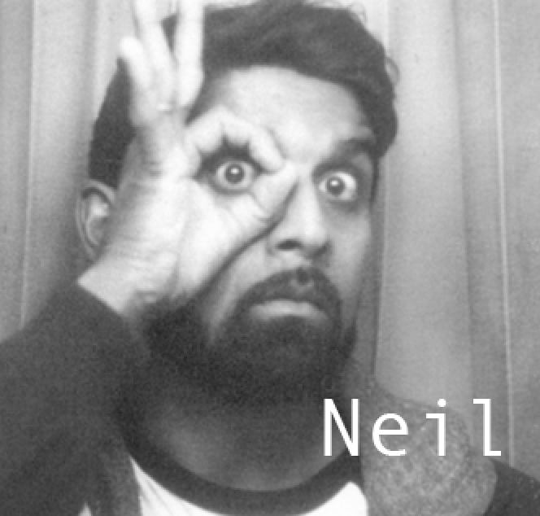
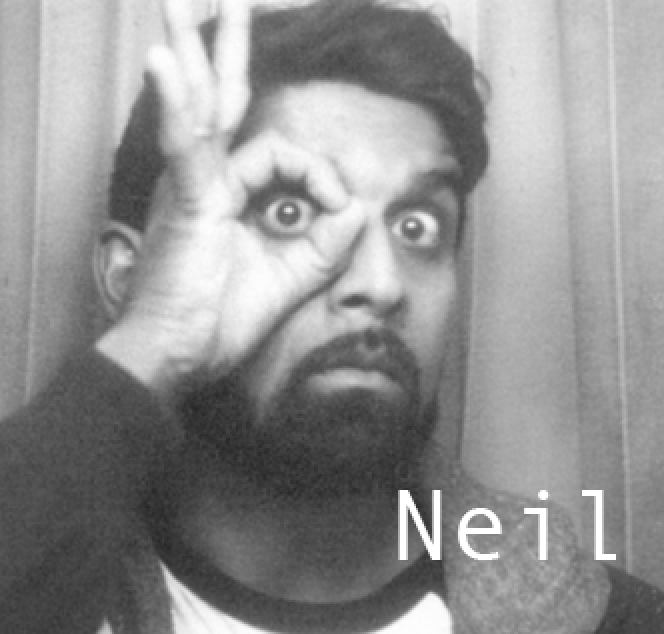
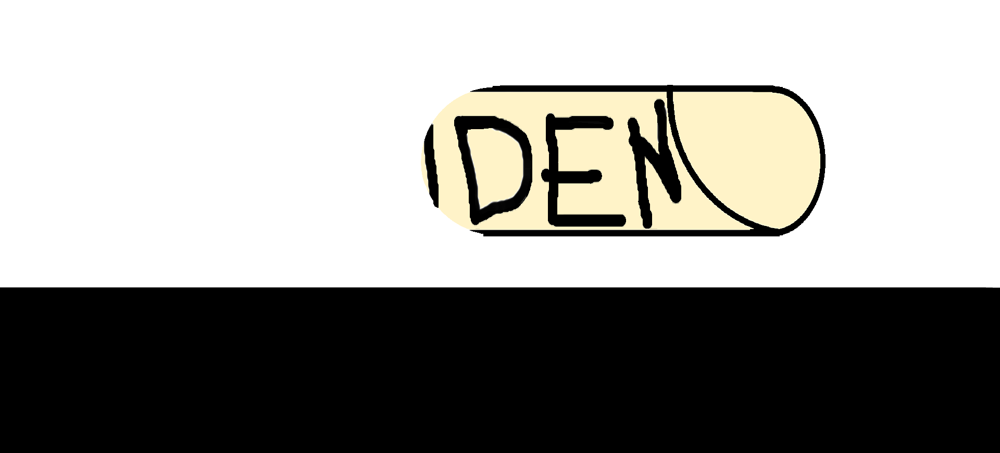
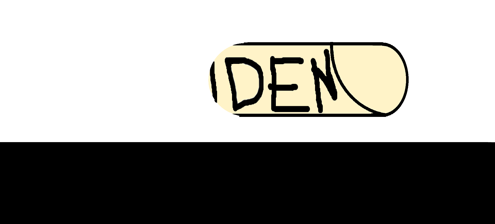

THE INFINITE WRENCH GOES VIRAL
WEEK SEVEN
MAY THURD TWO THOUSAND O'TWENTY
CREATED BY THE NEO-FUTURIST THEATER


 


WEEK SEVEN
MAY THURD TWO THOUSAND O'TWENTY
CREATED BY THE NEO-FUTURIST THEATER

CLICK UR PLAYS:
02. All of us are listening. Only one of us is pantsless.
06. in defense of stopping time
12. All My Friends Are Here Tonight
15. ONGOING COVIDSPONDENCE (pt. 2)
19. With DIRECTOR'S COMMENTARY on
V51. Joanna Went to Film School
V56. responding to all the strangers ive ever played online games with
 

kill your fucking landlord
credits: kirsten nick leah jasmine trent dan connor kate diana john neil ida lily trevor bilal sadbrad bethany john lizi anthony andy kaitlyn devon lucy mira bhandari laura dern otto rollo mike bingaman AND_YOU!!!
the staff:
kirsten riiber (artistic director)
jorge silva (managing director)
anna gelman (operations manager)
nick hart (education lead)
kate hardiman (lead technician)
connor shioshita pickett (cyber-design)
The Neo-Futurist Theater is partially supported by grants from Alphawood Foundation Chicago, Paul M. Angell Foundation, Arts Work Fund, The Chicago Community Foundation, Gaylord and Dorothy Donnelley Foundation, The Illinois Arts Council Agency, The MacArthur Fund for Arts and Culture at The Richard H. Driehaus Foundation, and The National Endowment for the Arts.
the staff:
kirsten riiber (artistic director)
jorge silva (managing director)
anna gelman (operations manager)
nick hart (education lead)
kate hardiman (lead technician)
connor shioshita pickett (cyber-design)
The Neo-Futurist Theater is partially supported by grants from Alphawood Foundation Chicago, Paul M. Angell Foundation, Arts Work Fund, The Chicago Community Foundation, Gaylord and Dorothy Donnelley Foundation, The Illinois Arts Council Agency, The MacArthur Fund for Arts and Culture at The Richard H. Driehaus Foundation, and The National Endowment for the Arts.